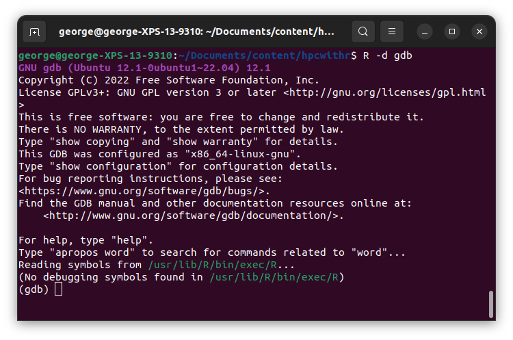
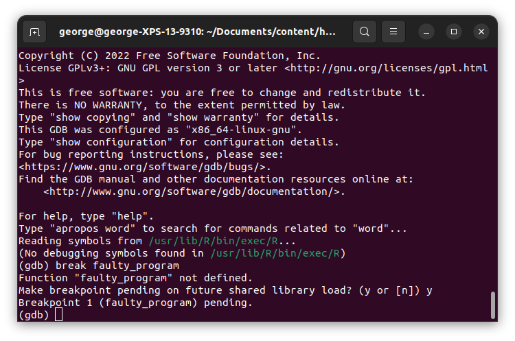
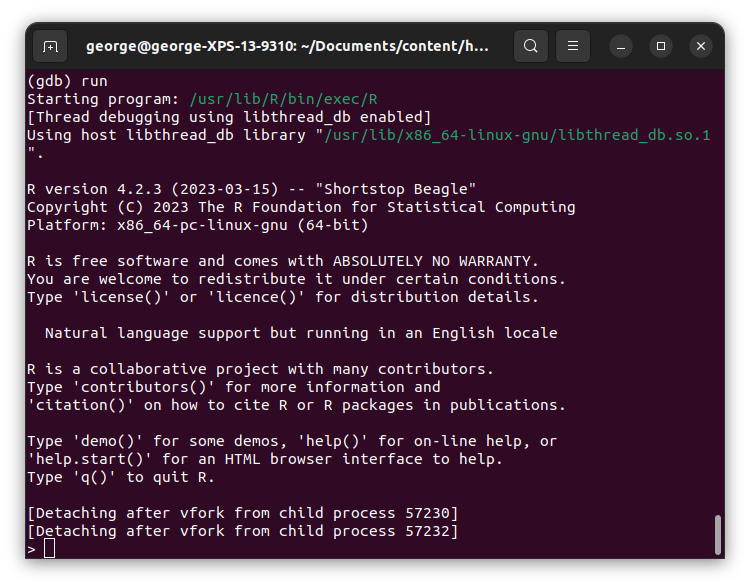
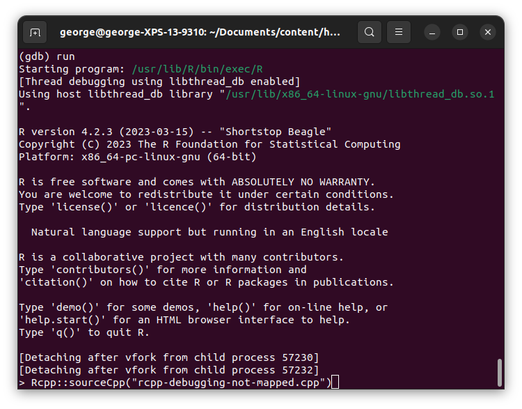
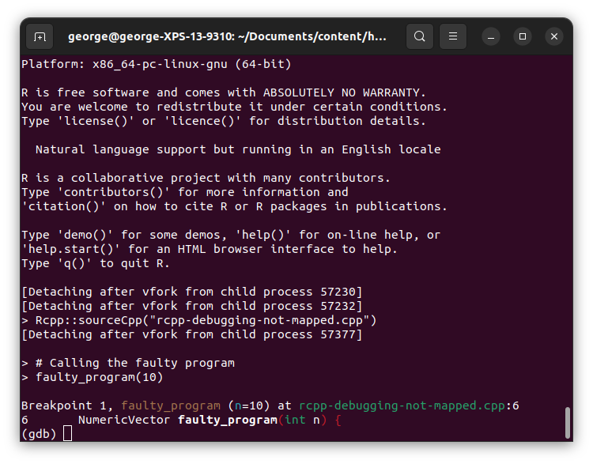
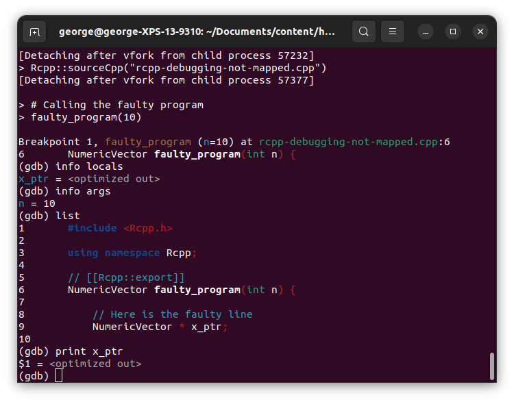

8 Debugging R w C++/C code
Although debugging R code is easy, the same doesn’t apply to compiled code in R1. This chapter shows a few ways to debug your R + C++ code. You will need the GNU Debugger (GDB) and Valgrind.
Before we start, remember that we will not deal with the good old-fashioned Rprint("Your code is working up to here") approach. Printing messages while your program runs can be very informative, but using Valgrind and GDB is, in my humble opinion, faster as, most of the time, those will scream at you, indicating the location of your problem.
The manual Writing R Extensions (R Core Team 2023) has a fair amount of information about debugging compiled code in R here. Dirk Eddelbuettel (lead author of Rcpp) has an excellent post on Stackoverflow and recommends a tutorial hosted on BioConductor (Rue-Albrecht et al. n.d.).
8.1 Debugging with Valgrind
As a starting point, we will use Valgrind. Valgrind provides a mature framework for memory debugging and profiling. We must launch the program through the command line to use a debugger within R. To lunch R with Valgrind, we use the following:
$ R --debugger=valgrindWhich will result in something like the following:
==31245== Memcheck, a memory error detector
==31245== Copyright (C) 2002-2017, and GNU GPL'd, by Julian Seward et al.
==31245== Using Valgrind-3.18.1 and LibVEX; rerun with -h for copyright info
==31245== Command: /usr/lib/R/bin/exec/R
==31245==
R version 4.2.3 (2023-03-15) -- "Shortstop Beagle"
Copyright (C) 2023 The R Foundation for Statistical Computing
Platform: x86_64-pc-linux-gnu (64-bit)
R is free software and comes with ABSOLUTELY NO WARRANTY.
You are welcome to redistribute it under certain conditions.
Type 'license()' or 'licence()' for distribution details.
Natural language support but running in an English locale
R is a collaborative project with many contributors.
Type 'contributors()' for more information and
'citation()' on how to cite R or R packages in publications.
Type 'demo()' for some demos, 'help()' for on-line help, or
'help.start()' for an HTML browser interface to help.
Type 'q()' to quit R.
> Once R executes with Valgrind, the debugger will catch any memory leaks generated by your C++/C code. The following is a faulty Rcpp program that creates a pointer using new and “forgets” to delete it.
#include <Rcpp.h>
using namespace Rcpp;
// [[Rcpp::export]]
NumericVector faulty_program(int n) {
// Here is the faulty line
NumericVector * x_ptr = new NumericVector(n);
return *x_ptr;
}
/***R
# Calling the faulty program
faulty_program(10)
*/We can use the -e flag in the R command to compile the Rcpp script using sourceCpp:
R --debugger=valgrind -e 'Rcpp::sourceCpp("rcpp-debugging-faulty.cpp")'==1773== Memcheck, a memory error detector
==1773== Copyright (C) 2002-2022, and GNU GPL'd, by Julian Seward et al.
==1773== Using Valgrind-3.22.0 and LibVEX; rerun with -h for copyright info
==1773== Command: /usr/local/lib/R/bin/exec/R -e Rcpp::sourceCpp("rcpp-debugging-faulty.cpp")
==1773==
R version 4.5.1 (2025-06-13) -- "Great Square Root"
Copyright (C) 2025 The R Foundation for Statistical Computing
Platform: x86_64-pc-linux-gnu
R is free software and comes with ABSOLUTELY NO WARRANTY.
You are welcome to redistribute it under certain conditions.
Type 'license()' or 'licence()' for distribution details.
Natural language support but running in an English locale
R is a collaborative project with many contributors.
Type 'contributors()' for more information and
'citation()' on how to cite R or R packages in publications.
Type 'demo()' for some demos, 'help()' for on-line help, or
'help.start()' for an HTML browser interface to help.
Type 'q()' to quit R.
> Rcpp::sourceCpp("rcpp-debugging-faulty.cpp")
> faulty_program(10)
[1] 0 0 0 0 0 0 0 0 0 0
>
==1773==
==1773== HEAP SUMMARY:
==1773== in use at exit: 60,654,766 bytes in 11,486 blocks
==1773== total heap usage: 31,685 allocs, 20,199 frees, 93,770,742 bytes allocated
==1773==
==1773== LEAK SUMMARY:
==1773== definitely lost: 32 bytes in 1 blocks
==1773== indirectly lost: 0 bytes in 0 blocks
==1773== possibly lost: 0 bytes in 0 blocks
==1773== still reachable: 60,654,734 bytes in 11,485 blocks
==1773== of which reachable via heuristic:
==1773== newarray : 4,264 bytes in 1 blocks
==1773== suppressed: 0 bytes in 0 blocks
==1773== Rerun with --leak-check=full to see details of leaked memory
==1773==
==1773== For lists of detected and suppressed errors, rerun with: -s
==1773== ERROR SUMMARY: 0 errors from 0 contexts (suppressed: 0 from 0)
By the end of the output, in the LEAK SUMMARY section, we see definitely lost: 24 bytes in 1 block, i.e., a memory leak. If we change the program by deleting the pointer before returning, the leak will be solved:
New program:
NumericVector res = *x_ptr;
delete x_ptr;
return res;Old program
return *x_ptr;Re-running R with Valgrind returns the following (only the last few lines):
R --debugger=valgrind -e 'Rcpp::sourceCpp("rcpp-debugging-faulty-fixed.cpp")'==1830== HEAP SUMMARY:
==1830== in use at exit: 60,655,412 bytes in 11,485 blocks
==1830== total heap usage: 31,722 allocs, 20,237 frees, 93,791,187 bytes allocated
==1830==
==1830== LEAK SUMMARY:
==1830== definitely lost: 0 bytes in 0 blocks
==1830== indirectly lost: 0 bytes in 0 blocks
==1830== possibly lost: 0 bytes in 0 blocks
==1830== still reachable: 60,655,412 bytes in 11,485 blocks
==1830== of which reachable via heuristic:
==1830== newarray : 4,264 bytes in 1 blocks
==1830== suppressed: 0 bytes in 0 blocks
==1830== Rerun with --leak-check=full to see details of leaked memory
==1830==
==1830== For lists of detected and suppressed errors, rerun with: -s
==1830== ERROR SUMMARY: 0 errors from 0 contexts (suppressed: 0 from 0)No more memory leaks.
8.2 Using GDB
Sometimes, we need to go further and inspect what’s going on inside the program. GBD is excellent for that. With GBD, we can set breakpoints that allow us to review the program while it is executed.
The following Rcpp code generates a memory not mapped type error:
#include <Rcpp.h>
using namespace Rcpp;
// [[Rcpp::export]]
NumericVector faulty_program(int n) {
// Here is the faulty line
NumericVector * x_ptr;
return *x_ptr;
}
/***R
# Calling the faulty program
faulty_program(10)
*/In it, we try to access a location in the memory that hasn’t been allocated yet, namely, a NumericVector declared as a pointer but never assigned. Using R --debugger=valgrind generates the following code:
==1887== Memcheck, a memory error detector
==1887== Copyright (C) 2002-2022, and GNU GPL'd, by Julian Seward et al.
==1887== Using Valgrind-3.22.0 and LibVEX; rerun with -h for copyright info
==1887== Command: /usr/local/lib/R/bin/exec/R -e Rcpp::sourceCpp("rcpp-debugging-not-mapped.cpp")
==1887==
R version 4.5.1 (2025-06-13) -- "Great Square Root"
Copyright (C) 2025 The R Foundation for Statistical Computing
Platform: x86_64-pc-linux-gnu
R is free software and comes with ABSOLUTELY NO WARRANTY.
You are welcome to redistribute it under certain conditions.
Type 'license()' or 'licence()' for distribution details.
Natural language support but running in an English locale
R is a collaborative project with many contributors.
Type 'contributors()' for more information and
'citation()' on how to cite R or R packages in publications.
Type 'demo()' for some demos, 'help()' for on-line help, or
'help.start()' for an HTML browser interface to help.
Type 'q()' to quit R.
> Rcpp::sourceCpp("rcpp-debugging-not-mapped.cpp")
> faulty_program(10)
==1887== Invalid read of size 8
==1887== at 0x2EF4D5D6: get__ (PreserveStorage.h:52)
==1887== by 0x2EF4D5D6: copy__<Rcpp::Vector<14, Rcpp::PreserveStorage> > (PreserveStorage.h:66)
==1887== by 0x2EF4D5D6: Vector (Vector.h:64)
==1887== by 0x2EF4D5D6: faulty_program(int) (rcpp-debugging-not-mapped.cpp:11)
==1887== by 0x2EF4D758: sourceCpp_1_faulty_program (rcpp-debugging-not-mapped.cpp:33)
==1887== by 0x495D56D: R_doDotCall (dotcode.c:754)
==1887== by 0x495DAE6: do_dotcall (dotcode.c:1437)
==1887== by 0x49AC44C: Rf_eval (eval.c:1260)
==1887== by 0x49AE06D: R_execClosure (eval.c:2393)
==1887== by 0x49AEDC6: applyClosure_core (eval.c:2306)
==1887== by 0x49ABF65: Rf_applyClosure (eval.c:2328)
==1887== by 0x49ABF65: Rf_eval (eval.c:1280)
==1887== by 0x49B2AD3: do_eval (eval.c:3959)
==1887== by 0x499EDD4: bcEval_loop (eval.c:8118)
==1887== by 0x49ABA59: bcEval (eval.c:7501)
==1887== by 0x49ABA59: bcEval (eval.c:7486)
==1887== by 0x49ABE2A: Rf_eval (eval.c:1167)
==1887== Address 0x0 is not stack'd, malloc'd or (recently) free'd
==1887==
*** caught segfault ***
address (nil), cause 'memory not mapped'
Traceback:
1: .Call(<pointer: 0x2ef4d6e0>, n)
2: faulty_program(10)
3: eval(ei, envir)
4: eval(ei, envir)
5: withVisible(eval(ei, envir))
6: source(file = srcConn, local = env, echo = echo)
7: Rcpp::sourceCpp("rcpp-debugging-not-mapped.cpp")
An irrecoverable exception occurred. R is aborting now ...
==1887==
==1887== Process terminating with default action of signal 11 (SIGSEGV): dumping core
==1887== at 0x4D6AB2C: __pthread_kill_implementation (pthread_kill.c:44)
==1887== by 0x4D6AB2C: __pthread_kill_internal (pthread_kill.c:78)
==1887== by 0x4D6AB2C: pthread_kill@@GLIBC_2.34 (pthread_kill.c:89)
==1887== by 0x4D1127D: raise (raise.c:26)
==1887== by 0x4D1132F: ??? (in /usr/lib/x86_64-linux-gnu/libc.so.6)
==1887== by 0x2EF4D5D5: copy__<Rcpp::Vector<14, Rcpp::PreserveStorage> > (PreserveStorage.h:65)
==1887== by 0x2EF4D5D5: Vector (Vector.h:64)
==1887== by 0x2EF4D5D5: faulty_program(int) (rcpp-debugging-not-mapped.cpp:11)
==1887==
==1887== HEAP SUMMARY:
==1887== in use at exit: 60,747,092 bytes in 11,700 blocks
==1887== total heap usage: 31,654 allocs, 19,954 frees, 93,747,849 bytes allocated
==1887==
==1887== LEAK SUMMARY:
==1887== definitely lost: 0 bytes in 0 blocks
==1887== indirectly lost: 0 bytes in 0 blocks
==1887== possibly lost: 5,987 bytes in 19 blocks
==1887== still reachable: 60,741,105 bytes in 11,681 blocks
==1887== of which reachable via heuristic:
==1887== newarray : 4,264 bytes in 1 blocks
==1887== suppressed: 0 bytes in 0 blocks
==1887== Rerun with --leak-check=full to see details of leaked memory
==1887==
==1887== For lists of detected and suppressed errors, rerun with: -s
==1887== ERROR SUMMARY: 1 errors from 1 contexts (suppressed: 0 from 0)
Segmentation fault (core dumped)To inspect an error with GDB, we have to follow these steps:
Run R with gdb as debugger:
R --debugger=gdb. R won’t start immediately, so we have time to add breakpoints.
We can set a breakpoint on the given function with
break faulty_program. GDB will grab it on the fly, so chooseyes. It most likely will warn you that there’s no symbol for that function.
Run R using the
runcommand in gdb:
Source the program using
Rcpp::sourceCpp, and wait forgdbto pause the program once it reaches the breakpoint.
Once the program has paused, we can inspect the context.

Because of the number of options it has, using GBD can be overwhelming. Here is the list of commands I use the most:
help # Get help info locals # List the local variables (scope) info args # List the arguments passed to the function list # See the last few lines of the source code continue # Continue running the program next # Execute the next step bt # Show the entire call stack (backtrace) up # Go up one level in the call stack down # Go down one level in the call stack print # Print/display an expressionAnd here is an example using
info locals,info args,list, andprint.
Finally, to exit the program, type
exit(similar toq()in R.)